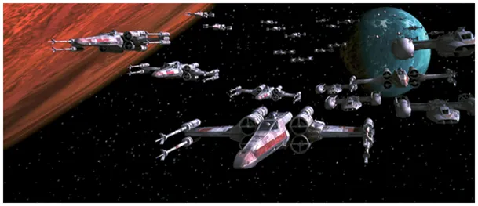

Opary absurdu wymieszane z oparami helu to gaz rozweselający.
Wojna z Iranem w praktyce skończyła się miesiąc temu, warto o tym napisać, bo media i nałogowi komentatorzy nie zauważyli. Było to w kwietniu 2026, gdy flotylla USA utknęła na Oceanie Indyjskim setki km od Iranu.
2026.05.21
Irańskie linie lotnicze, w tym narodowy przewoźnik Iran Air, wznowiły międzynarodowe połączenia 25 kwietnia 2026 między innymi do Stambułu, Medyny, Maskatu, Dohy, czy Bagdadu...
Atak rakietowy na amerykańsko-brytyjską bazę wojskową Diego Garcia na drugiej, południowej półkuli 20 marca 2026 rozwiał fantazje USA i ich lokalnych cyngli i doprowadziło do zawieszenia broni w kwietniu, de facto do zakończenia wojny z wynikiem porażki zachodu. Rezygnacja z "zabawy" koalicjantów w Zatoce Perskiej i w Europie, którzy otrzeźwieli przypieczętowała klęskę.
Na specjalny tekst zasługuje irańska technologia atakowania wielkich okrętów wroga setkami małych, bardzo szybkich uzbrojonych łodzi. Ta "flotylla komarów" za dnia ukrywa się w klifach skalistego wybrzeża lub w cieniu lasów namorzynowych, jest zrobiona ze śmiesznie tanich materiałów jak meble ogrodowe, kosztuje grosze, jest niewidzialna dla satelitów i super radarów i żadna wielka jednostka nie może się do niej zbliżyć, bo zostanie najzwyczajniej podpalona lub zatopiona. To jest prawdziwy powód ekwilibrystki słownej Trumpa, gdy ogłaszał swoje pyrrusowe zwycięstwa na papierze/w TV.. Strzelanie do komarów z armaty w ogrodzie zawsze się kończy komicznie, jeśli babcia nie zejdzie na zawał od tego lub nie trafimy w dom sąsiada.
Na dziś sytuacja "Zachodu" z wyjątkiem USA jest fatalna, bo Iran w Zatoce Perskiej wraz z rafineriami zniszczył linie produkcji helu, niezastąpionego przy produkcji chipów i potrzebnego do chłodzenia kwantowego AI, atak był tak druzgocący, że nie ma co naprawiać, odbudowa zakładów potrwa kilka lat. Ostatnie tamtejsze zapasy helu załadowane na krio-tankowce stoją uwięzione przez wspólną irańsko-amerykańską blokadę za Ormuzem i po kilku tygodniach praktycznie zniknęły, wyparowały jak KPO, bo helu długo magazynować się nie da.
Statki wożą po kilkadziesiąt specjalnych krio-kontenerów z helem. Przed atakiem USA, jeden był wart ok. 1/4 mln USD, teraz ceny skoczyły do blisko 1 mln USD, a głównym graczem na rynku (40% ) zostały USA. Europa jedzie dosłownie na oparach, helu dużo …ma Rosja, ale wiadomo, nawet hel, gaz szlachetny, tam śmierdzi onucami.
Ostatnim bliskim dostawcą jest Algieria i tu niespodzianka! Algieria kupuje broń z Rosji, w tym objęte embargiem myśliwce stealth. Drugim dostawcą nowoczesnego arsenału jest Turcja, która zawarła w maju 2026 (sic!), niespodziewanie szybko, wielką umowę gospodarczą. Turcja jest teraz głównym inwestorem w Afryce Północnej i oba te kraje stworzyły silny sojusz wypierania post- kolonialnych mocarstw. Francja jest tu liderem w szybkości zwijania swych interesów z Afryki i przez byłą swą kolonię jest traktowana jak bogaty, rozpieszczony klient. Tu trzeba zaznaczyć, że Turcja wspiera rząd sąsiedniej Libii, ma tam bazy wojskowe i jest jedynym gwarantem tamtejszego państwa.
Na Ziemi helu jest bardzo mało, niewyczerpane zasoby są na Księżycu, właśnie po hel swoim 5000 tonowym Starshipem leci sam on, MUSK! Tak, 5 milionów kg trzeba wystrzelić w Kosmos, by za 10 lat przywieźć z Księżyca sto tysięcy kg helu, ale to nie jest ten hel potrzebny w przemyśle elektronicznym! Używamy dziś helu4, na Księżycu jest hel3, inny izotop. Z helu księżycowego nie będzie chipów, ale czysta energia, kontrolowane Słońce na Ziemi. Przewagę w tej technologii mają Chiny, ale w wyścigu po surowiec Musk chce pokazać prymat. Jak zwykle, w każdej fajnej bajce Imperium kontratakuje. Większość polityków, szczególnie w Europie nie ma o tym bladego pojęcia i daje się nabrać ekipie Trumpa na prasową narrację, że rakiety Muska to dalsza część wojny z Iranem.

W naszym baraku zawsze było najweselej i pewnie "nasi" z tego helu to i bimber zrobią i sprzedadzą z akcyzą, ale to już inna historia co opisałem tu: "Czy leci z nami pilot? Lecimy po hel 3, czyli po Grala XXI wieku." https://pawelklimczewski.pl/2024/01/21/czy-leci-z-nami-pilot-lecimy-po-hel-3-czyli-po-grala-xxi-wieku/
Paweł Klimczewski